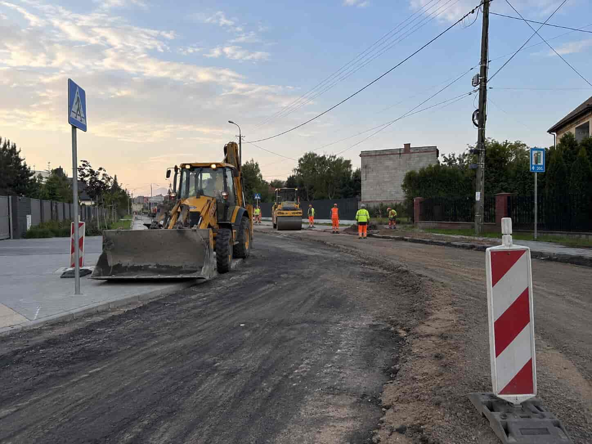
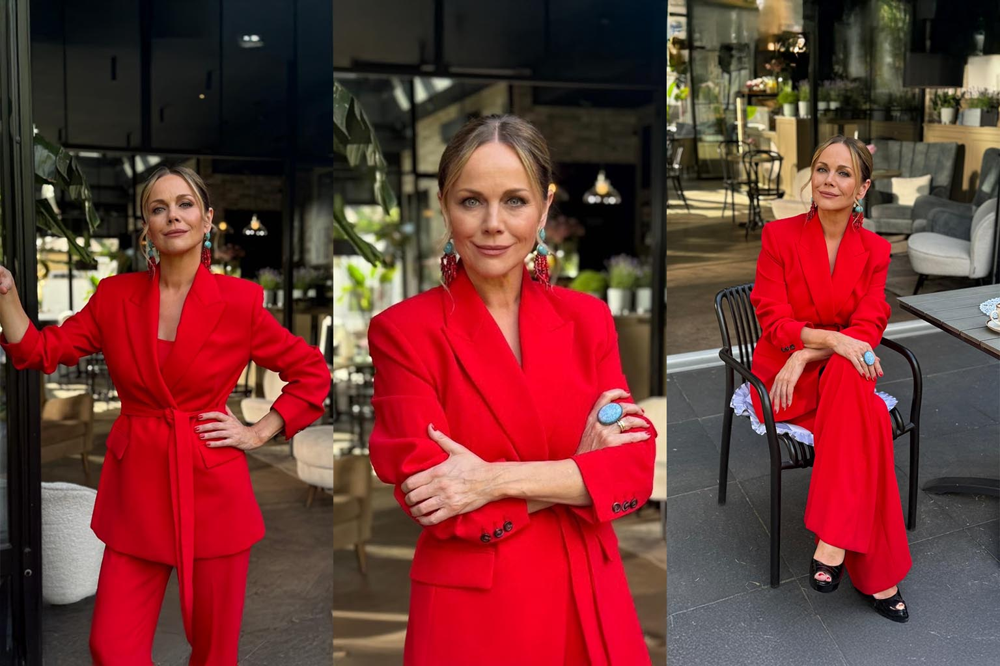
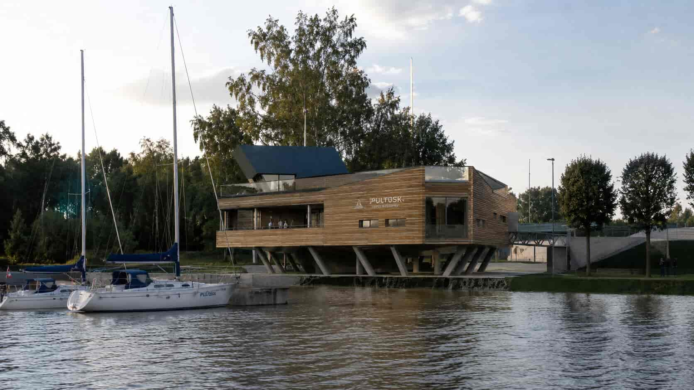
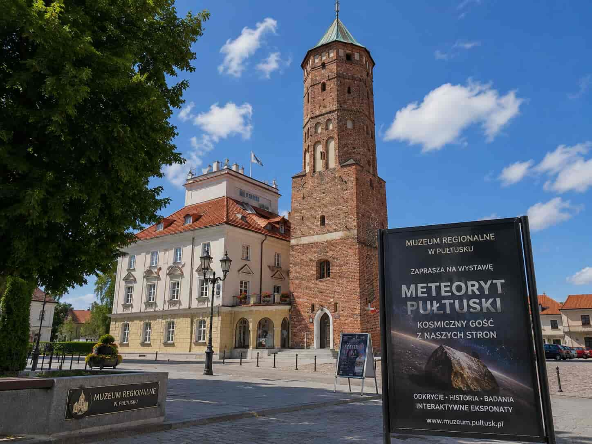
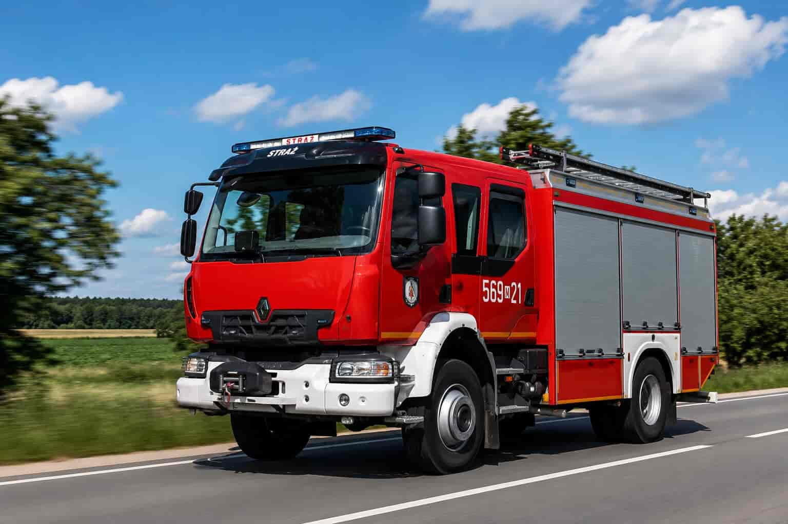
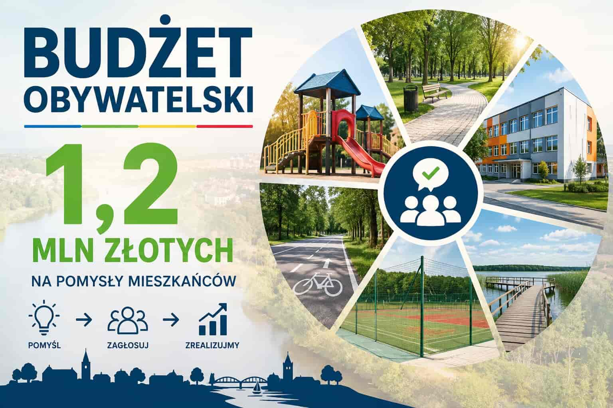
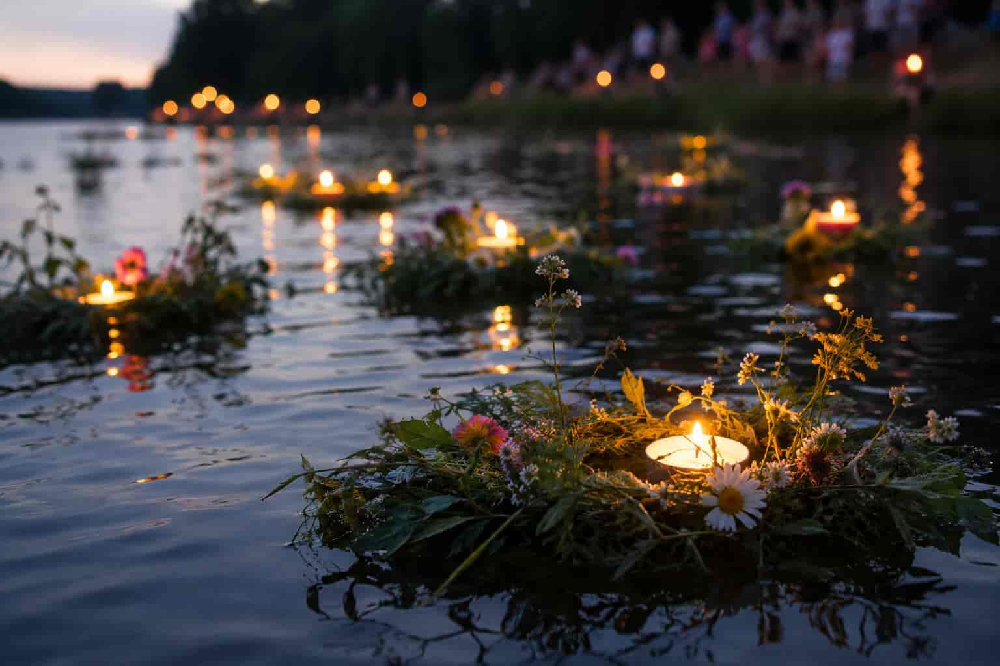
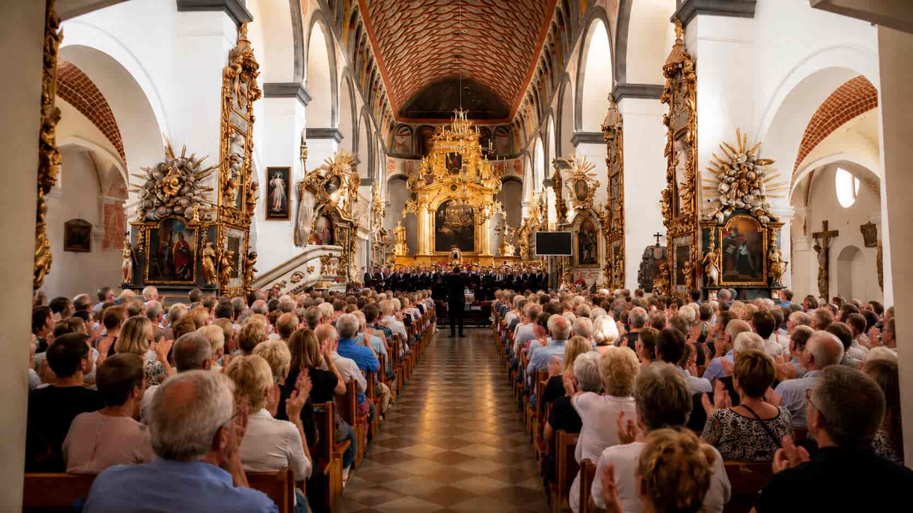
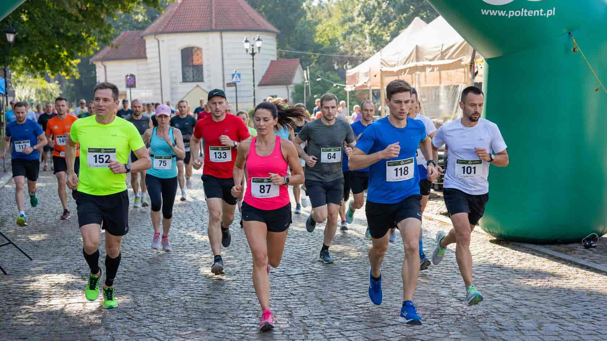

Miasto
Rusza przebudowa ulicy Białowiejskiej. Utrudnienia do jesieni
Drogowcy wchodzą na kolejny odcinek. Powstanie nowa nawierzchnia, chodniki i ścieżka rowerowa.
 PułtuskMazowsze
PułtuskMazowsze

Spod zamkowego wzgórza wypłynęły pierwsze łodzie. Rejsy po kanałach Narwi potrwają do końca września, a w weekendy zaplanowano kursy z przewodnikiem.
Kandydat na burmistrza mówi o odpowiedzialności dorosłych, bezpieczeństwie w szkołach i panelu poświęconym zdrowiu psychicznemu dzieci i młodzieży.

Rozmowa o budowaniu własnego głosu w sieci, kobiecej niezależności i projekcie „Alina Lifestyle”.
Młodzi terapeuci chcą stworzyć miejsce, w którym o trudnościach można mówić bez wstydu.

Drogowcy wchodzą na kolejny odcinek. Powstanie nowa nawierzchnia, chodniki i ścieżka rowerowa.

Inwestycja za blisko 2 mln zł. Z przystani skorzystają mieszkańcy, turyści i organizatorzy spływów.

W wieży ratuszowej zobaczymy oryginalne okazy „deszczu kamieni" z 1868 roku i nowe multimedia.
Rodzina tragicznie zmarłego Dawida próbuje ustalić, co naprawdę wydarzyło się tamtego wieczoru.

Pojazd trafił do jednostki dzięki dofinansowaniu z budżetu województwa i środkom gminy.
Kandydat komentuje granice prywatności i apeluje o spokojną rozmowę bez etykietowania ludzi.

Do podziału rekordowa pula. Wnioski można składać do końca miesiąca w urzędzie i online.

Koncerty, food trucki i pokaz ogni. Kulminacja w sobotni wieczór na bulwarach.

Komplet publiczności i owacje na stojąco po finałowym wykonaniu Bacha.

Ponad 600 biegaczy wystartowało z najdłuższego rynku w Europie.